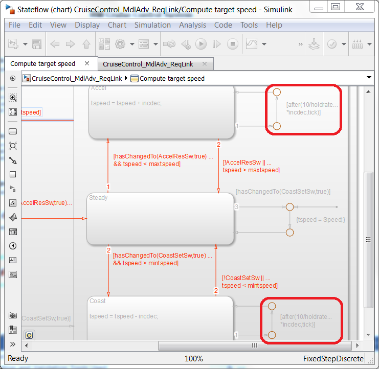

Step 1: Requirements Traceability
Contents
- Introduction
- Verification and Validation Tools Used
- What requirements are implemented in the model?
- Configuring for Two-Way Linking
- Linking Requirements to Simulink Blocks
- Linking Requirements to Stateflow Objects
- Generating a Requirements Traceability Report
- Demonstrating Complete Requirements Traceability
- Summary
Introduction
Building executable specifications is an effective and proven way to communicate design ideas and documentation of low level requirements. Simulink and Stateflow are ideal platforms for defining executable specifications in embedded software development. In the model-based development process these executable specifications are then elaborated to create production code ready models.
Executable specifications provide an opportunity for early validation of requirements. You can enhance this by providing a link between parts of your model and the corresponding requirements. And you can answer the question: Are all my requirements implemented?
The Requirements Management Interface (RMI) allows you to associate requirements with Simulink® models and Stateflow® charts. You can use the Requirements Management Interface to:
- Associate requirements with Simulink models, subsystems and blocks
- Associate requirements Stateflow charts, states, transitions, boxes and functions
- Associate requirements with MATLAB code lines and MATLAB Function Block code lines
- Navigate from a Simulink block or Stateflow object in a diagram or in the Model Explorer to a requirement
- Navigate from an embedded link in a requirements document to the corresponding Simulink or Stateflow object
- View objects in Simulink or Stateflow diagrams that have requirements associated with them.
Verification and Validation Tools Used
- Simulink Verification and Validation
What requirements are implemented in the model?
Let's first take a look at the requirements document. In this example the requirements are in a MS Word document. The Requirements Management Interface (RMI) provides a way to navigate from the requirement to the linked block in the system. To navigate use a Ctrl+Click on the MATLAB icon in the Word document to highlight the linked in Simulink. At this time we are looking at a model with many links to the requirements document. Later in this step, we will show how to create these links.
Open the requirements document: cruise_control_reqs_mdl_linked.docx – click here.
Do the following:
Ctrl+Click on the above highlighted icon associated with the "Enable/Disable Switch" to navigate to the linked "CruiseOnOff" inport in the Cruise Control model.
Do the following:
Right-Click on "CruiseOnOff" inport to navigate to the associated requirement as shown in the following figure. Select Requirements Traceability, and then select 1. "Enable/Disable Switch" to navigagte to the requirements.
From the previous exercise, by right clicking on a block, you can tell if there is a requirement associated with that block, but what if you just want to get a "bird's eye view?” For this section, we have a model that has multiple links to the requirement document. The Requirements Management Interface (RMI) provides a way to get a "bird's eye view” of the blocks that are linked to requirements. The "model highlighting" feature will provide this view.
Do the following:
Under Analysis, select Requirements Traceability, and Highlight model option. You should see all the blocks that have requirements linked to them highlighted.
Do the following:
Click on hyperlink Click to load Requirement Details.
There are two types of highlighting shown above. The orange boundary means that at least one block within that subsystem has a requirement associated with it. The solid fill highlighting means there is requirement associated with that particular block. There are links inside the "Compute target speed" as shown by the orange boundary.
To view the links in the state chart, do the following:
Open the "Compute target speed" subsystem to see the links associated with states and transitions in the Stateflow chart. Notice model objects can have one or more linked requirements. And a requirement may be linked to one or more model objects.
To remove the highlighting, we can follow similar steps as to highlight the model. Do the following:
Under Analysis, select Requirements Traceability and Unhighlight model option. With that, all of the highlighting in the model is removed.
Configuring for Two-Way Linking
RMI allows you to create either One-Way (one direction, from model to requirement) or Two-Way (from model to requirement, and from requirement to model) links. The typical use case for One-Way linking is if the user (modeler) doesn't have write privileges to the requirements document. Two-Way linking will modify/update the requirements document with model link information. This includes creating the hyperlink MATLAB icon to navigate to the model from the requiremetn. In the example, Two-Way linking has been enabled.
To verify that bidirectional linked has been enabled, do the following:
- Select Analysis, select Requirements Traceability and Settings.
- Check the Modify destination for bi-directional linking option under the Selection Linking tab.

The Simulink environment is now configured for bi-directional linking. Please note that this setting stays with your MATLAB/Simulink configuration, and is not attached to a particular model.
Linking Requirements to Simulink Blocks
When we highlighted model to show the model objects with links to requirements there were some inconsistencies with regard to the blocks that had links and other blocks that did not have links. One inconsistency to note is that not all of the inports are linked to requirements, specifically the "Brake" and "Speed" inports.
After reviewing the requirements, it was determined that there were not any requirements for these inputs. These have been added to the requirements document to capture these input sensors. But now we need to link these new requirements (shown in green below) to the inports. We will be creating bi-directional links to our model.
To link the new "Brake" input requirement to the model, do the following:
- If necessary, open the requirements document: cruise_control_reqs_mdl_linked.docx – click here.
- Select the "Vehicle Brake Input" requirement.
- Right-click on the Brake" inport block and select *Requirements Traceability and Link to Selection in Word.
You should now see the MATLAB icon next to the requirement text. The icon is a URL hyperlink which navigates you to the linked block in the Simulink model with a Ctrl+Click. Also, a new menu item has been added to the Requirements Traceability menu for the "Brake" inport block.
- Ctrl+Click on the URL hyperlink button in the requirement document. The corresponding model should open up, with the Brake inport block highlighted as below:
- Right-click on the Brake inport block, and select the requirement text "1. Vehicle Brake Input". You should jump to the requirements document with the requirement text being highlighted.
This completes the exercise of linking requirements to Simulink objects. We will now repeat this for Stateflow and MATLAB Functions in the next two exercises.
Linking Requirements to Stateflow Objects
When we highlighted model to show the Stateflow objects with links to requirements there were some inconsistencies with regard to the transitions that had links and other tranisitions that did not have links. One inconsistency to note is that both "hold" function transitions are are not linked to requirements. We are pulling ahead an issue that we will find in a later step to illustrate linking to Stateflow objects.

After reviewing the requirements, it was determined that there were not any requirements for the "hold" function. These have been added to the requirements document to capture the "hold" function. But now we need to link these new requirements (shown in green below) to the transitions.
The same linking mechanism can be applied to Stateflow objects as well. Let's see how this could be done.
To link the new "hold" function requirement to the Stateflow transition, do the following:
1. If necessary, open the requirements document: cruise_control_reqs_mdl_linked.docx – click here. 2. Select the requirement: "2.10 Continuous "Accelerate" input increases...
3. Open the Compute target speed chart. 4. Right-click on the transition [after(10/holdrate*incdec,tick)]. 5. Select Requirements Traceability and Link to Selection in Word.
6. Navigate between the [after(10/holdrate*incdec,tick)] transition and the requirement in the same way you did for the Simulink blocks.
Generating a Requirements Traceability Report
With any type of structured verification and validation activity, it is important to track what has been done. This is especially true when it comes to requirements traceability. As part of the RMI functionality, you can generate a report that contains a snapshot of the model along with a list of the model items that have a requirement or requirements linked to them.
Let's first configure how we want the report to look:
- Select Analysis, Requirements Traceability, and Settings. You should see the following window below popup.

3. Select the Report tab, and configure your settings to be the same as the screenshot shown above. With these options, RMI will automatically highlight the model before generating the report, and we will also get a list of blocks that don't have requirement associated with it.
4. Under Analysis, select Requirements and Generate Report option. An html report similar to the following screenshot should appear.
5. Try to navigate between the report, the model and the requirements.
Please note that the report generated is based of off Simulink Report Generator. The user can use the existing report template as a starting for additional customization.
Demonstrating Complete Requirements Traceability
Now that we have good traceability from the requirement to the model object. Let’s work through a method that will demonstrate the complete traceability from requirement to model to source code.
Do the following:
- Under Code, select C/C++ Code, and Build Model. Note: the options for embedding the requirement comments in the C source code have already been set.
After the code has been generated (should be ~5-10 sec), the following code generation report should open:
Notice the links to the model blocks embedded in the code comments.
2. Click on one of the '<Root>/Brake' links to highlight the Brake inport block in the model.
Next, we are going to use the Navigate to Code function to return from the model to the code.
3. Right click on the highlighted Brake inport block, and select C/C++ Code and Navigate to C/C++ Code.
This should take you back to the code generation report and the code the code comment associated with that block is now highlighted.
Now we will navigate to a requirement using hyperlinks in the code generation report.
4. Click on "1. Vehicle Brake Input" to navigate to the associated requirement.
With these functions shown above, you can go from Requirement to Model to Source Code, or directly from Source Code to Requirement.
Summary
The requirements linking feature has been shown to provide a method to know where in your model a requirement has been implemented. Additionally with the model highlighting feature it was easy to see what parts of the model were not associated with a requirement. From this view we were able to determine we had missing requirements for some of the inputs and the functions. With the bidirectional links in the requirements we were also able to see that all requirements were associated with at least one model object. So going forward we have confidence that our model has implemented all of the requirements. We will continue to answer more of the questions in the next steps with our structured and formal testing framework for securing the quality, robustness and safety of our cruise controller.
- Close all models - click here.
- Go to Step 2: Modeling Standards - click here.